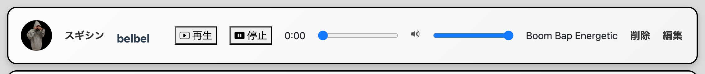

beatuplord（BEAT X）
開発環境
Ruby / Ruby on Rails / MySQL / GitHub / Heroku / Visual Studio Code / Trello
-
概要
制作時間 70時間 URL http://52.68.124.20/ ID admin PASS 2222 -
動作テスト
テスト用アカウント
mail test_user@hoge.com PASS testuser1234
OUTLINEアプリケーションの概要
twiterやinstergramで出来なかったbeatをアップロードしてやり取りが気軽に出来るアプリケーション
-
開発に至った経緯
数多くのビートメーカーにとって余っているお蔵入りとされるビートは必ずいっぱいあるので気軽にビートを投稿することにフォーカスした母体があればお蔵入りのビートも気軽にアップロードし公開、管理が容易になり買い手のラッパーにとっても通なビートが欲しい時にビートだけにフォーカスしたサイトがあると非常に便利であると考え作ることにしました
-
開発で工夫したこと
railsのgemのデフォルトだけの仕様では音楽ファイルがダウンロードされてしまうなどのユーザビリティではない仕様だったのでjava scriptを使ってカスタムボタンを導入した点がユーザー視点でのこだわりです。
-
今後実装したいと思っていること
カテゴリー別に検索出来る機能。いいね機能の実装。コメント機能や一覧にあれば便利な機能。